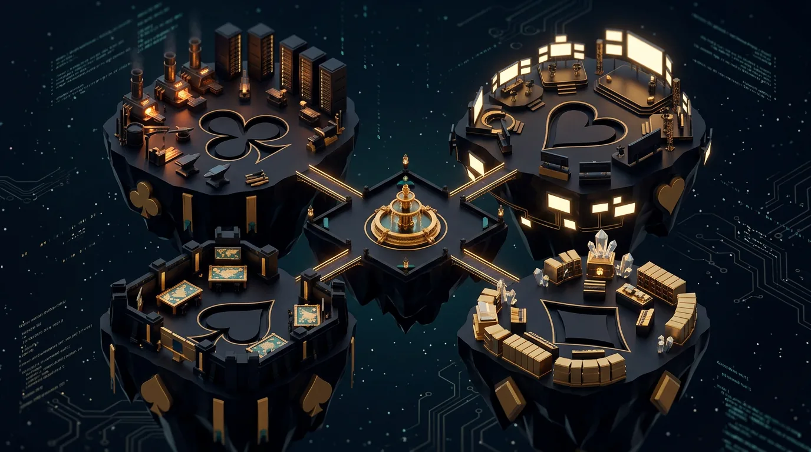

The Court
- Pages
- Hermes chat and command, daily briefing
- Lives here
- Hermes, the dispatcher
The hub becomes a world you fly through. Hermes holds court at the centre; every agent lives in the kingdom of its suit; real agency work moves the scores.

♣Club Kingdom ♥Heart Kingdom ✦The Court ♠Spade Kingdom ♦Diamond KingdomThe 33 sidebar pages become destinations. Each kingdom gathers the tools and agents that share its suit.
Scores are derived from data the hub already serves. Nothing is typed in by hand, so the courtyard can't drift from reality.
| Mechanic | Driven by | Source |
|---|---|---|
| Quests | Kanban cards. Finishing one awards XP to its kingdom. | /api/kanban |
| Agent levels | Completed delegations per agent; a status light shows idle, working or error. | /api/swarm/tasks |
| ♥ Heart health | Posting streak and approved reels. | /api/ig/queue, /api/ig/metrics |
| ♣ Club health | Services up and studio health. | /api/studio/health |
| ♠ Spade health | Audits completed. | /api/swarm/tasks |
| ♦ Diamond health | Monthly revenue toward the £5,000–£8,000 target. | /api/clients |
| Achievements | Gauntlet pass from Severus, 7-day posting streak, first client signed. | Derived from the above |
| Royal decree | One daily quest set by Hermes each morning. | Orchestrator |
The game never blocks work. Every real page stays at most two clicks away, and the classic view is one toggle.
Example values for illustration, not your live figures.
Five images: four kingdoms and the Jokers' Gallery. Used as island billboards and loading screens.
25 portraits from one fixed template so the set matches: suit, rank, name, level.
Small emblems for streaks, Gauntlet passes and first client.
The 3D world is built in code; images become textures and overlays. That keeps it fast. About 30 images in total: free once Gemini image creation is back, or roughly $2 through OpenRouter.
Five islands, fly-to camera, panels linking to existing pages. Becomes the home page, with the classic-view toggle.
Kingdom health bars, agent status lights and levels from real hub data.
Kanban quests, badges, the daily decree and the agent trading-card collection.
Built on what the hub already has: React Three Fiber, drei and post-processing, extending the existing courtyard scene. The key art loads first as a still image so the page is usable before the 3D scene arrives. Every island is also a keyboard-focusable button, and reduced-motion settings skip the camera flights.